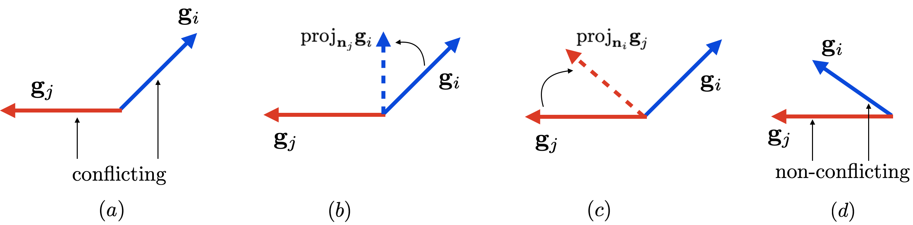

PCGrad removes the conflicting part of each task’s gradient before the gradients are summed, and leaves the rest unchanged.
PCGrad (projecting conflicting gradients) changes one line of a multitask training step: the sum of the task gradients. Two task gradients conflict when they point more than 90 degrees apart. For every conflicting pair, PCGrad removes from one gradient the part that points against the other, then sums the edited gradients. It runs every training step on that step’s batch and carries no state between steps. Its cost is one backward pass (one pass that computes every gradient) per task over the shared parameters, plus a dot product for each pair of tasks. It learns nothing and adds no hyperparameters. The weighting methods, GradNorm and Uncertainty Weighting, change each loss’s weight; PCGrad changes the gradients’ directions.
On this page
When two task gradients conflict, adding them cancels part of each, and the sum can raise one task’s loss. PCGrad does not rescale the gradients. It removes only the part of each gradient that points against the other task’s gradient, and keeps every part that does not, so an edited gradient gets shorter only by the part removed, and the sum can come out longer than the plain sum. It is also called gradient surgery.
The test for a conflict is the dot product of two gradients, which equals their lengths times the cosine of the angle between them. Its sign is the sign of that cosine, called the cosine similarity: positive below 90 degrees, zero at 90 degrees, negative above. A negative dot product means a conflict. The part of gi that points along gj is its projection onto gj; in a conflict that projection points against gj, and PCGrad subtracts it. What remains is orthogonal to gj (at 90 degrees). Figure 10 of Introduction to Multitask Learning lets you drag two gradients and watch the projection.
The core of PCGrad in PyTorch is two functions. project is the eq card in Section 3. pcgrad applies it to every pair in random order and sums the results; G holds one flattened task gradient per row.
import random
import torch
def project(g, g_j):
dot = g @ g_j
if dot < 0: # conflict
coef = dot / (g_j @ g_j)
g = g - coef * g_j
return g
def pcgrad(G): # G: (K, P)
K = len(G)
out = []
for i in range(K):
g = G[i].clone()
others = list(range(K))
others.remove(i)
random.shuffle(others)
for j in others:
g = project(g, G[j])
out.append(g)
return torch.stack(out).sum(0)G[j], then sums, step 3 in Section 2. A mean instead of the sum would divide the step by K.For a small step, only the projection changes task j’s loss, so it is the smallest edit that removes the conflict.

Panels (a) and (b).
Panels (c) and (d). arXiv:2001.06782.
Figure 3. (a) conflict; (b) gi minus its part along gj; (c) the reverse; (d) no conflict.
Figure 4. Red marks each conflicting part, gold the combined gradient d.
Joint training can do worse than training each task alone. Conflicting gradients cause this, and the damage is large when three conditions hold together, the tragic triad.
PCGrad replaces the usual single loss.backward(). The step below differentiates each task’s batch-mean loss separately over the shared parameters, edits the results with pcgrad and project from Section 3, and writes the edited sum into the shared parameters’ gradients.
import torch
from torch.autograd import grad
RETAIN = dict(retain_graph=True)
def flat_grad(loss, ps):
gs = grad(loss, ps, **RETAIN)
flat = [g.ravel() for g in gs]
return torch.cat(flat)
def fill_grads(params, vec):
i = 0
for p in params:
n = p.numel()
part = vec[i:i + n]
p.grad = part.view_as(p)
i += n
body = list(trunk.parameters())
head_ps = list(heads.parameters())
def pcgrad_step(losses):
rows = []
for L in losses:
g_k = flat_grad(L, body)
rows.append(g_k)
g = pcgrad(torch.stack(rows))
opt.zero_grad()
fill_grads(body, g)
total = sum(losses)
total.backward(inputs=head_ps)
opt.step()flat_grad returns one task’s gradient over a parameter list ps as one flat vector, keeping the graph for the next task.fill_grads writes a flat vector back into each parameter’s .grad, using numel and view_as.body and K flattened gradient copies, step 1 in Section 2.fill_grads.The official code is tianheyu927/PCGrad, a TensorFlow 1 optimizer wrapper used as PCGrad(tf.train.AdamOptimizer()) followed by optimizer.minimize(losses) with a list of task losses. PCGrad adds no hyperparameters; the base method’s settings are kept. LibMTL ships a PyTorch version (--weighting PCGrad) that edits only the shared encoder’s gradients and shuffles the task order.
Loss scale and momentum still matter. A loss on a larger scale gives a longer gradient, and momentum can bring back a removed direction; see Sections 5 and 8.1 of Gradient Balancing Inside the Training Loop.
Two methods learn each task’s loss weight (GradNorm and Uncertainty Weighting). Four methods edit the task gradients (PCGrad, GradVac, CAGrad and MGDA). The question each one answers:
| Method | The question it answers |
|---|---|
| GradNorm | How much weight should each task's loss get so all tasks train at a similar rate? (learned during training from how fast each loss falls) |
| Uncertainty Weighting | How much weight should each task's loss get, given how noisy that task's targets are? (the noise level is learned along with the model) |
| PCGrad (this page) | How should a task gradient be edited when it conflicts with another task's gradient? |
| GradVac | How should each pair of task gradients be moved toward a target cosine, a running average of that pair's past cosines? |
| CAGrad | How can a step raise the smallest per-task improvement while staying near the average gradient? |
| MGDA | Which convex combination of task gradients lowers every task's loss at once, and when does no such combination exist? |
PCGrad leaves each edited gradient orthogonal to the one it conflicted with, a cosine similarity of zero. GradVac asks whether zero is the right target for every pair of tasks.